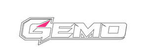

Trade Mark Journal No.2026/006 6 February 2026
UK00004326390 19 January 2026 (28)

- Class 28
- Fishing tackle; Fishing equipment; Fishing rods, rod supports, rod holders; reels, lines, hooks, floats, weights, baits, feeders, catapults, nets, boxes, all being fishing tackle; Fishing creels; Fishing floats; Fishing gaffs; Fishing hooks; Fishing lines; Fishing plumbs; Fishing leaders; Fishing sinkers; Fishing lures; Fishing swivels; Fishing poles; Fishing rods; Fishing reels; Fishing weights; Fishing harnesses; Fishing plugs; Fishing bobbers; Fishing spinners; Fishing tippets; Fishing rod cases; Creels [fishing traps]; Floats for fishing; Lures for fishing; Bait (Artificial fishing -); Fishing tackle boxes; Fishing tackle floats; Fishing ground baits; Handheld fishing nets; Lines for fishing; Gut for fishing; Swivels [fishing tackle]; Hooks for fishing; Artificial fishing worms; Artificial fishing bait; Fishing bait [synthetic]; Paternosters [fishing tackle]; Rods for fishing; Poles for fishing; Reels for fishing; Fishing rod rests; Fishing rod supports; Bags for fishing; Rod blanks (Fishing -); Fishing reel cases; Fishing line casts; Fishing tackle terminal; Fishing tackle bags; Fishing rod holders; Fishing lure boxes; Fishing rod handles; Fishing fly boxes; Bite indicators [fishing tackle]; Lures [artificial] for fishing; Landing nets for fishing; Artificial baits for fishing; Artificial chum for fishing; Bite sensors [fishing tackle]; Bags adapted for fishing; Fishing tackle terminal tackle; Tungsten weights for fishing; Luminous floats for fishing; Inflatable fishing float tubes; Decoys for hunting or fishing; Lures for hunting or fishing; Line casts for fly-fishing; Strike indicators for ice fishing; Fish hook removers being fishing tackle; Audible indicating apparatus for use in fishing; Angling nets; Floats for angling; Angling bank stick supports; Artificial flies for use in angling; Bite alarms for use in angling; Electronic bite indicators for use in angling; Bait [artificial]; Bait throwers; Catapult bait pouches; Ground bait [artificial]; Artificial fish bait; Bait bags for holding live bait; Parts and fittings for all the aforesaid goods. .
Rob Wootton